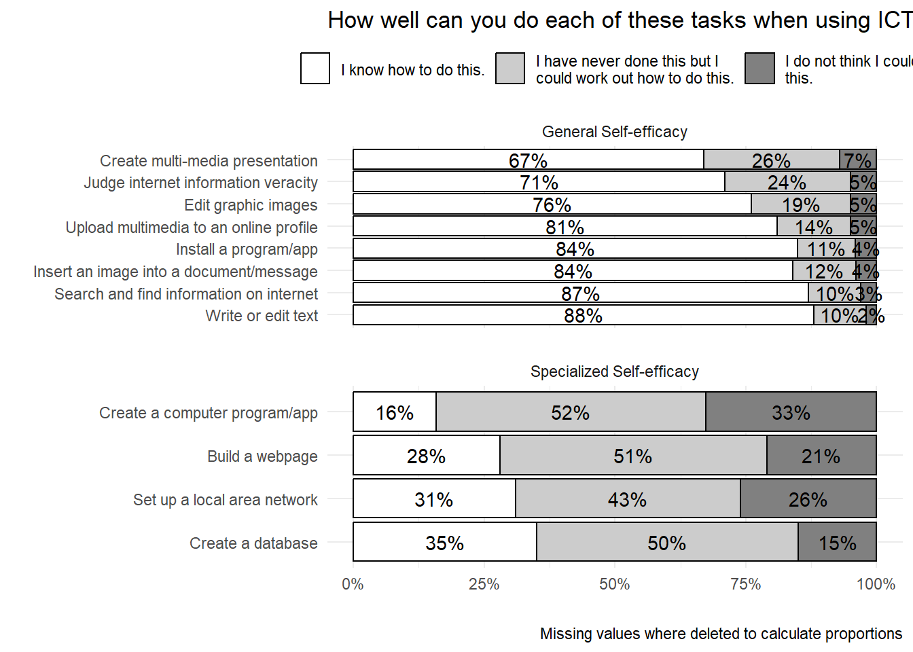
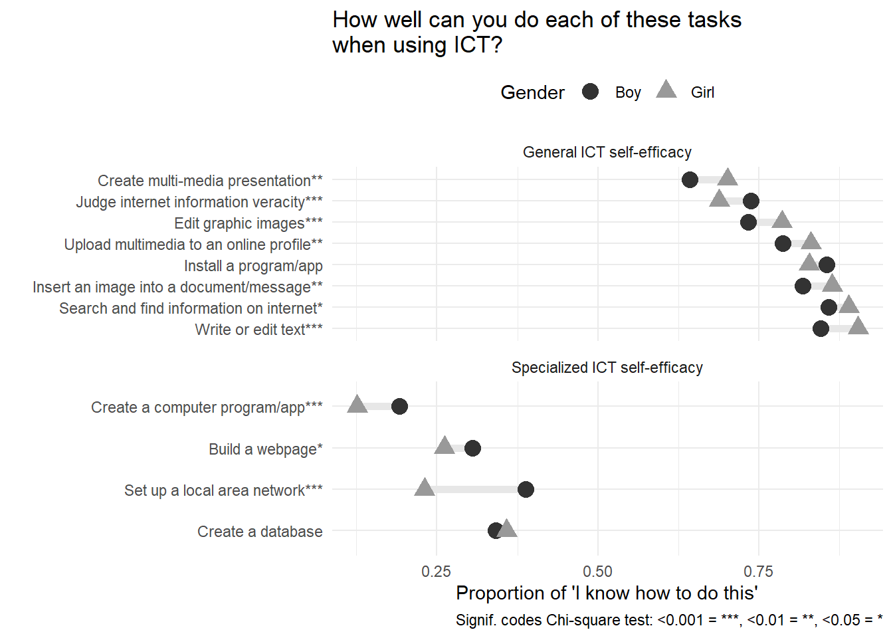
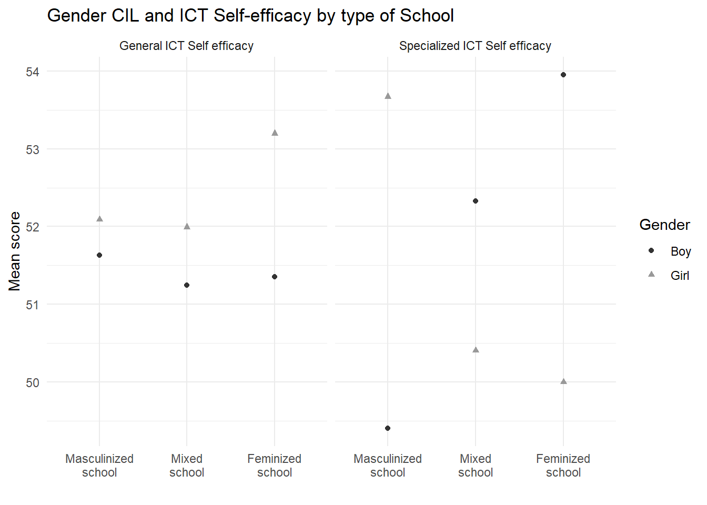

options(scipen=999) #No scientific notation
options(digits = 2) #Round results two decimals
pacman::p_load(tidyverse, #Data manipulation
gt, #Tables
gtsummary, #Descriptive table
sjmisc, #Label manipulation
labelled, #Label manipulation
skimr, #Data manipulation
sjPlot, #Correlation
corrplot, #Correlation
Hmisc, #Correlation
lme4, #Multilevel modeling
reghelper, #Get ICC
texreg, #View models
AICcmodavg, #Best fit model
responsePatterns, #Check items
ggrepel, #labels plots
ggpubr, #arrange plots
ggExtra, #marginal plots
scales,
summarytools, #descriptive tables
knitr, #Markdown
kableExtra, #Markdown
psych, #FA Analysis
car,
haven, #Open data
janitor, #Data process
Hmisc, #Labels manipulation
stringr #Label manipulation
)
# Open student and school raw data
bsgchli2 <- read_sav("../../../input/raw_data/2018/BSGCHLI2.sav")
bcgchli2 <- read_sav("../../../input/raw_data/2018/BCGCHLI2.sav")
source("00_proccess.R")Results
The analysys begins shwing descriptive results for the self-efficacy items, as displayed in Figure 1. Notably, across all tasks, a significant proportion of students —no less than 65%— expressed confidence in their ability to perform general tasks, while fewer than 10% reported an inability to do so. On the whole, participants demonstrated a high level of general self-efficacy. In contrast, when it comes to specialized self-efficacy, less than 30% of students confidently state their proficiency in tasks such as building a webpage or creating a computer program. This percentage increases a little when it comes to tasks like setting up a local area network (31%) or creating a database (35%). Therefore, and as it could be expected, students tend to perceive having less skills in advanced than in basic ICT tasks.
selfeff_items <- data|>
select(is2g27a,is2g27c,is2g27d,is2g27i,
is2g27j,is2g27k,is2g27l,is2g27m,
is2g27b,is2g27e,is2g27g,is2g27h)|>
to_label()
selfeff_items <- to_label(selfeff_items)
relative_freq_selfeff <- rbind(
selfeff_items |>
drop_na(is2g27a) |>
count(variable = is2g27a) |>
mutate(prop = n / sum(n), name = "Edit graphic images",
type = "General Self-efficacy"),
selfeff_items |>
drop_na(is2g27c) |>
count(variable = is2g27c) |>
mutate(prop = n / sum(n), name = "Write or edit text",
type = "General Self-efficacy"),
selfeff_items |>
drop_na(is2g27d) |>
count(variable = is2g27d) |>
mutate(prop = n / sum(n), name = "Search and find information on internet",
type = "General Self-efficacy"),
selfeff_items |>
drop_na(is2g27i) |>
count(variable = is2g27i) |>
mutate(prop = n / sum(n), name = "Create multi-media presentation",
type = "General Self-efficacy"),
selfeff_items |>
drop_na(is2g27j) |>
count(variable = is2g27j) |>
mutate(prop = n / sum(n), name = "Upload multimedia to an online profile",
type = "General Self-efficacy"),
selfeff_items |>
drop_na(is2g27k) |>
count(variable = is2g27k) |>
mutate(prop = n / sum(n), name = "Insert an image into a document/message",
type = "General Self-efficacy"),
selfeff_items |>
drop_na(is2g27l) |>
count(variable = is2g27l) |>
mutate(prop = n / sum(n), name = "Install a program/app",
type = "General Self-efficacy"),
selfeff_items |>
drop_na(is2g27m) |>
count(variable = is2g27m) |>
mutate(prop = n / sum(n), name = "Judge internet information veracity",
type = "General Self-efficacy"),
selfeff_items |>
drop_na(is2g27b) |>
count(variable = is2g27b) |>
mutate(prop = n / sum(n), name = "Create a database",
type = "Specialized Self-efficacy"),
selfeff_items |>
drop_na(is2g27e) |>
count(variable = is2g27e) |>
mutate(prop = n / sum(n), name = "Build a webpage",
type = "Specialized Self-efficacy"),
selfeff_items |>
drop_na(is2g27g) |>
count(variable = is2g27g) |>
mutate(prop = n / sum(n), name = "Create a computer program/app",
type = "Specialized Self-efficacy"),
selfeff_items |>
drop_na(is2g27h) |>
count(variable = is2g27h) |>
mutate(prop = n / sum(n), name = "Set up a local area network",
type = "Specialized Self-efficacy")
)
relative_freq_selfeff <- relative_freq_selfeff |>
mutate(
name = factor(name, levels = c(
"Write or edit text",
"Search and find information on internet",
"Insert an image into a document/message",
"Install a program/app",
"Upload multimedia to an online profile",
"Edit graphic images",
"Judge internet information veracity",
"Create multi-media presentation",
"Create a database",
"Set up a local area network",
"Build a webpage",
"Create a computer program/app")),
variable = factor(variable, levels = c(
"I do not think I could do this.",
"I have never done this but I could work out how to do this.",
"I know how to do this."
)),
prop = round(prop, 2)
)
relative_freq_selfeff |>
ggplot(aes(x = name, y = prop, fill = variable)) +
geom_bar(position = "fill", stat = "identity", color = "black") +
facet_wrap(~type,ncol=1,scales = "free_y") +
coord_flip() +
scale_x_discrete(labels = function(x) str_wrap(x, width = 42)) +
labs(
title = "How well can you do each of these tasks when using ICT?",
x = "", y = "", fill = "",
caption = "Missing values where deleted to calculate proportions"
) +
theme_minimal() +
theme(
legend.position = "top",
panel.spacing = unit(1, "lines")
) +
scale_fill_grey(
start = 1, end = 0.5,
limits = c(
"I know how to do this.",
"I have never done this but I could work out how to do this.",
"I do not think I could do this."
),
labels = ~ stringr::str_wrap(.x, width = 30)
) +
scale_y_continuous(labels = scales::percent) +
geom_text(aes(label = paste0(prop * 100, "%")), position = position_fill(vjust = 0.5))
Turning now to geneder differences in self-efficacy, Figure 2 presents a comparison of male and female students, displaying the proportion of those answering “I know how to do this” in each gender group. Whereas girls outperform boys in most of the general self-efficacy items, the opposite occurs for the specialized one. While most of the differences are statistically significant, they tend to be larger for the specialized self-efficacy in favor of boys.
data |>
mutate(s_sex=to_label(s_sex))|>
mutate_at(vars(starts_with("is2g")), ~
ifelse(.==1,1,0)) |> #Dummy
rename(gender=s_sex)|>
group_by(gender) |>
summarise(across(starts_with("is2g"),
mean, na.rm = TRUE)) |>
pivot_longer(cols = starts_with(c("is2g")),
names_to = "items",
values_to = "puntaje") |>
mutate(type=ifelse(items%in%c("is2g27b","is2g27e",
"is2g27g","is2g27h"),
"Specialized ICT self-efficacy",
"General ICT self-efficacy")) |>
mutate(items=
factor(items,
levels=c(
"is2g27b",
"is2g27h",
"is2g27e",
"is2g27g",
"is2g27c",
"is2g27d",
"is2g27k",
"is2g27l",
"is2g27j",
"is2g27a",
"is2g27m",
"is2g27i"),
labels=c(
"Create a database",
"Set up a local area network***",
"Build a webpage*",
"Create a computer program/app***",
"Write or edit text***",
"Search and find information on internet*",
"Insert an image into a document/message**",
"Install a program/app",
"Upload multimedia to an online profile**",
"Edit graphic images***",
"Judge internet information veracity***",
"Create multi-media presentation**"
)))|>
ggplot(aes(x=to_label(puntaje),y=to_label(items)))+
geom_line(aes(group=to_label(items)),color="#E7E7E7",linewidth=2.0)+
geom_point(aes(shape=gender,color=gender),size=4)+
theme_minimal()+
labs(x="Proportion of 'I know how to do this'",y="",color="Gender",
caption= "Signif. codes Chi-square test: <0.001 = ***, <0.01 = **, <0.05 = *")+
scale_color_grey(start=.2,end = .6)+
theme(legend.position = "top")+
scale_y_discrete(labels=function(x) str_wrap(x,width = 50))+
facet_wrap(~type,ncol=1,scales="free_y")+
labs(title="How well can you do each of these tasks
when using ICT?")+
guides(shape=guide_legend(title="Gender"))Warning: There was 1 warning in `summarise()`.
ℹ In argument: `across(starts_with("is2g"), mean, na.rm = TRUE)`.
ℹ In group 1: `gender = Boy`.
Caused by warning:
! The `...` argument of `across()` is deprecated as of dplyr 1.1.0.
Supply arguments directly to `.fns` through an anonymous function instead.
# Previously
across(a:b, mean, na.rm = TRUE)
# Now
across(a:b, \(x) mean(x, na.rm = TRUE))
Figure 3 shows differences in general and specialized self-efficacy according to the gender composition of the schools. Schools are classified here as masculinized when they have less than one third of girls, feminized when this proportion is more than two thirds, and mixed when the girls’ proportion lies in between. Regarding general self-efficacy we observe that the outperformance of girls is larger in feminized schools, whereas the opposite occurs for specialized self-efficacy: girls underperform boys in feminized schools.
data|>
mutate(s_sex = to_label(s_sex),
c_gender_type = labelled(c_gender_type,
labels = c("Masculinized school" = 1,
"Mixed school" = 2,
"Feminized school" = 3)),
c_gender_type = to_label(c_gender_type)
)|>
group_by(s_sex,c_gender_type)|>
drop_na(c_gender_type)|>
summarise(geneff = mean(s_geneff, na.rm = TRUE),
speceff = mean(s_speceff, na.rm = TRUE))|>
pivot_longer(cols = c(geneff, speceff), names_to = "efficacy", values_to = "mean")|>
ggplot(aes(x = c_gender_type, y = mean)) +
geom_point(aes(shape = s_sex, color = s_sex))+
facet_wrap(~efficacy,
labeller = labeller( efficacy = c(
"geneff" = "General ICT Self efficacy",
"speceff" = "Specialized ICT Self efficacy"))
)+
scale_color_grey(start=.2,end = .6)+
theme_minimal()+
labs(shape = "Gender", color = "Gender",
y = "Mean score", x= "",
title = "Gender CIL and ICT Self-efficacy by type of School")+
scale_x_discrete(labels = function(x) str_wrap(x, width = 10))`summarise()` has grouped output by 's_sex'. You can override using the
`.groups` argument.
Multilevel models
Table 1 and Table 2 displays the results of the multilevel regression models. Beggining with the results for the general self-efficacy, we observe in Model 1 that girls obtain better scores, but this is no longer significant when entering the Computer and Information Literacy (CIL) score in Model 2, with a positive significan association throughout the models. Regarding level 2 predictors, it is relevant to metion that the variance of self-efficacy that is related to the schools (intra-class correlation of the null model) is only 5%, therefore there is few variance left to find significant effects at this level. The only predictor that display a significant effect at this level is the average school CIL, wich, contrary to level 1, has a negative association with generalized self efficacy. Interactions effects are not significant in this case.
data_model <- data |> mutate(
s_sex=to_label(s_sex),
c_gender_type = to_label (c_gender_type)
)
#Null model
m0_geneff <- lmer(s_geneff ~ 1 + (1 | idschool), data=data_model)
#Level 1 fixed effects
m1_a_geneff <- lmer(s_geneff ~ 1 +
s_sex +
s_hisced + s_homlit +
(1 | idschool),
data=data_model)
m1_b_geneff <- lmer(s_geneff ~ 1 +
s_sex + s_pv1cil +
s_hisced + s_homlit +
(1 | idschool),
data=data_model)
m1_c_geneff <- lmer(s_geneff ~ 1 +
s_sex + s_pv1cil +
s_sex*s_pv1cil +
s_hisced + s_homlit +
(1 | idschool),
data=data_model)
# Level 2 fixed effects
m2_a_geneff <- lmer(s_geneff ~ 1 +
s_sex + s_pv1cil +
c_gender_type +
s_hisced + s_homlit +
(1 | idschool),
data=data_model)
m2_b_geneff <- lmer(s_geneff ~ 1 +
s_sex + s_pv1cil +
c_pv1cil +
s_hisced + s_homlit +
(1 | idschool),
data=data_model)
m2_c_geneff <- lmer(s_geneff ~ 1 +
s_sex + s_pv1cil +
c_pv1cil+ c_gender_type +
s_hisced + s_homlit +
(1 | idschool),
data=data_model)
m2_d_geneff <- lmer(s_geneff ~ 1 +
s_sex + s_pv1cil +
c_pv1cil+ c_gender_type +
s_sex * c_gender_type +
s_hisced + s_homlit +
(1 | idschool),
data=data_model)
m2_e_geneff <- lmer(s_geneff ~ 1 +
s_sex + s_pv1cil +
c_pv1cil+ c_gender_type +
s_sex * c_pv1cil +
s_hisced + s_homlit +
(1 | idschool),
data=data_model)
tab_model(m1_a_geneff,m1_b_geneff,m1_c_geneff,
m2_a_geneff,m2_b_geneff,m2_c_geneff,m2_d_geneff,m2_e_geneff,
show.ci = FALSE, auto.label = FALSE,
p.style = "stars",collapse.se = TRUE,
show.re.var = TRUE,show.icc = FALSE,
show.obs = TRUE,show.ngroups = TRUE,
show.aic = TRUE,
rm.terms = c("s_hisced","s_homlit"),
pred.labels = c("Intercept",
"Gender (Girl = 1)",
"CIL score",
"Int. Gender*CIL",
"Gender composition: Masculinized school",
"Gender composition: Feminized school",
"School CIL",
"Mod. Gender*Masculinized school",
"Mod. Gender*Feminized school",
"Mod. Gender*School CIL"),
dv.labels = c("Model 1","Model 2","Model 3",
"Model 4", "Model 5", "Model 6", "Model 7","Model 8"))| Model 1 | Model 2 | Model 3 | Model 4 | Model 5 | Model 6 | Model 7 | Model 8 | |
|---|---|---|---|---|---|---|---|---|
| Predictors | Estimates | Estimates | Estimates | Estimates | Estimates | Estimates | Estimates | Estimates |
| Intercept | 48.00 *** (0.53) |
34.79 *** (0.95) |
33.24 *** (1.27) |
34.98 *** (1.30) |
38.78 *** (1.64) |
38.50 *** (1.95) |
38.05 *** (2.02) |
35.95 *** (2.40) |
| Gender (Girl = 1) | 0.75 * (0.32) |
0.37 (0.31) |
3.53 * (1.75) |
0.47 (0.33) |
0.40 (0.31) |
0.49 (0.33) |
2.04 (1.71) |
5.49 * (2.78) |
| CIL score | 0.34 *** (0.02) |
0.37 *** (0.03) |
0.33 *** (0.02) |
0.37 *** (0.02) |
0.36 *** (0.02) |
0.36 *** (0.02) |
0.36 *** (0.02) |
|
| Int. Gender*CIL | -0.07 (0.04) |
|||||||
| Gender composition: Masculinized school | -0.16 (0.88) |
-0.04 (0.88) |
0.37 (0.98) |
0.04 (0.88) |
||||
| Gender composition: Feminized school | 0.78 (1.05) |
0.94 (1.05) |
1.26 (1.53) |
1.10 (1.06) |
||||
| School CIL | -0.13 ** (0.04) |
-0.11 * (0.05) |
-0.11 * (0.05) |
-0.06 (0.05) |
||||
| Mod. Gender*Masculinized school | -1.62 (1.74) |
|||||||
| Mod. Gender*Feminized school | -1.48 (2.16) |
|||||||
| Mod. Gender*School CIL | -0.10 (0.06) |
|||||||
| Random Effects | ||||||||
| σ2 | 73.36 | 67.83 | 67.76 | 67.09 | 67.65 | 66.96 | 66.99 | 66.93 |
| τ00 | 2.97 idschool | 2.06 idschool | 2.07 idschool | 2.26 idschool | 2.05 idschool | 2.28 idschool | 2.28 idschool | 2.24 idschool |
| N | 178 idschool | 178 idschool | 178 idschool | 163 idschool | 178 idschool | 163 idschool | 163 idschool | 163 idschool |
| Observations | 2974 | 2974 | 2974 | 2746 | 2974 | 2746 | 2746 | 2746 |
| Marginal R2 / Conditional R2 | 0.033 / 0.070 | 0.122 / 0.148 | 0.123 / 0.149 | 0.117 / 0.146 | 0.119 / 0.145 | 0.114 / 0.143 | 0.114 / 0.143 | 0.114 / 0.143 |
| AIC | 21318.944 | 21074.441 | 21077.908 | 19435.513 | 21072.046 | 19435.928 | 19433.674 | 19438.554 |
| * p<0.05 ** p<0.01 *** p<0.001 | ||||||||
Turning now to specialized self-efficacy, tbl-specialized-multilevel follow the same structure than the previous table. In this case, and contrary to what was observed for general self-efficacy, girls consistently show a lower average score than boys, whereas the CIL score now is negative and its statistical significance dissapears when adding predictors. Despite having a low intra-class correlation (6%), in this case it is possible to detect some relevant effects in level 2 predictors. School CIL, as in general self-efficacy, displays a negative effect, and in Model 7 the gender composition appears to have a positive association with specialized self-efficacy for both masculinized and feminized schools (with mixed schools as the reference cathegory). Regarding interactions … (completar luego de comprobar y corregir los modelos)
# Null model
m0_speceff <- lmer(s_speceff ~ 1 + (1 | idschool), data=data_model)
# Level 1 fixed effects
m1_a_speceff <- lmer(s_speceff ~ 1 +
s_sex +
s_hisced + s_homlit +
(1 | idschool),
data=data_model)
m1_b_speceff <- lmer(s_speceff ~ 1 +
s_sex + s_pv1cil +
s_hisced + s_homlit +
(1 | idschool),
data=data_model)
m1_c_speceff <- lmer(s_speceff ~ 1 +
s_sex + s_pv1cil +
s_sex*s_pv1cil +
s_hisced + s_homlit +
(1 | idschool),
data=data_model)
# Level 2 fixed effects
m2_a_speceff <- lmer(s_speceff ~ 1 +
s_sex + s_pv1cil +
c_gender_type +
s_hisced + s_homlit +
(1 | idschool),
data=data_model)
m2_b_speceff <- lmer(s_speceff ~ 1 +
s_sex + s_pv1cil +
c_pv1cil +
s_hisced + s_homlit +
(1 | idschool),
data=data_model)
m2_c_speceff <- lmer(s_speceff ~ 1 +
s_sex + s_pv1cil +
c_pv1cil+ c_gender_type +
s_hisced + s_homlit +
(1 | idschool),
data=data_model)
m2_d_speceff <- lmer(s_speceff ~ 1 +
s_sex + s_pv1cil +
c_pv1cil+ c_gender_type +
s_sex * c_gender_type +
s_hisced + s_homlit +
(1 | idschool),
data=data_model)
m2_e_speceff <- lmer(s_speceff ~ 1 +
s_sex + s_pv1cil +
c_pv1cil+ c_gender_type +
s_sex * c_pv1cil +
s_hisced + s_homlit +
(1 | idschool),
data=data_model)
#Final table
tab_model(m1_a_speceff,m1_b_speceff,m1_c_speceff,
m2_a_speceff,m2_b_speceff,m2_c_speceff,m2_d_speceff,m2_e_speceff,
show.ci = FALSE, auto.label = FALSE,
p.style = "stars",collapse.se = TRUE,
show.re.var = TRUE,show.icc = FALSE,
show.obs = TRUE,show.ngroups = TRUE,
show.aic = TRUE,
rm.terms = c("s_hisced","s_homlit"),
pred.labels = c("Intercept",
"Gender (Girl = 1)",
"CIL score",
"Int. Gender*CIL",
"Gender composition: Masculinized school",
"Gender composition: Feminized school",
"School CIL",
"Mod. Gender*Masculinized school",
"Mod. Gender*Feminized school",
"Mod. Gender*School CIL"),
dv.labels = c("Model 1","Model 2","Model 3",
"Model 4", "Model 5", "Model 6",
"Model 7", "Model 8"))| Model 1 | Model 2 | Model 3 | Model 4 | Model 5 | Model 6 | Model 7 | Model 8 | |
|---|---|---|---|---|---|---|---|---|
| Predictors | Estimates | Estimates | Estimates | Estimates | Estimates | Estimates | Estimates | Estimates |
| Intercept | 52.50 *** (0.58) |
56.05 *** (1.08) |
54.81 *** (1.42) |
54.90 *** (1.51) |
63.90 *** (1.93) |
63.45 *** (2.27) |
61.84 *** (2.33) |
61.30 *** (2.75) |
| Gender (Girl = 1) | -1.76 *** (0.34) |
-1.66 *** (0.34) |
0.88 (1.92) |
-1.70 *** (0.36) |
-1.62 *** (0.34) |
-1.66 *** (0.36) |
3.42 (1.89) |
2.55 (3.06) |
| CIL score | -0.09 *** (0.02) |
-0.06 * (0.03) |
-0.09 *** (0.02) |
-0.03 (0.03) |
-0.04 (0.03) |
-0.04 (0.03) |
-0.04 (0.03) |
|
| Int. Gender*CIL | -0.05 (0.04) |
|||||||
| Gender composition: Masculinized school | 1.54 (1.06) |
1.80 (1.03) |
3.09 ** (1.13) |
1.87 (1.03) |
||||
| Gender composition: Feminized school | 1.59 (1.27) |
1.92 (1.23) |
3.94 * (1.73) |
2.05 (1.23) |
||||
| School CIL | -0.24 *** (0.05) |
-0.26 *** (0.05) |
-0.25 *** (0.05) |
-0.22 *** (0.06) |
||||
| Mod. Gender*Masculinized school | -5.22 ** (1.93) |
|||||||
| Mod. Gender*Feminized school | -6.09 * (2.40) |
|||||||
| Mod. Gender*School CIL | -0.09 (0.06) |
|||||||
| Random Effects | ||||||||
| σ2 | 80.52 | 80.45 | 80.42 | 80.58 | 80.14 | 80.22 | 80.12 | 80.20 |
| τ00 | 4.95 idschool | 4.38 idschool | 4.40 idschool | 4.46 idschool | 3.84 idschool | 3.87 idschool | 3.73 idschool | 3.85 idschool |
| N | 178 idschool | 178 idschool | 178 idschool | 163 idschool | 178 idschool | 163 idschool | 163 idschool | 163 idschool |
| Observations | 2971 | 2971 | 2971 | 2743 | 2971 | 2743 | 2743 | 2743 |
| Marginal R2 / Conditional R2 | 0.011 / 0.068 | 0.016 / 0.067 | 0.017 / 0.068 | 0.017 / 0.069 | 0.030 / 0.074 | 0.033 / 0.078 | 0.036 / 0.079 | 0.034 / 0.078 |
| AIC | 21606.396 | 21600.337 | 21605.174 | 19948.034 | 21583.928 | 19930.882 | 19921.306 | 19934.659 |
| * p<0.05 ** p<0.01 *** p<0.001 | ||||||||